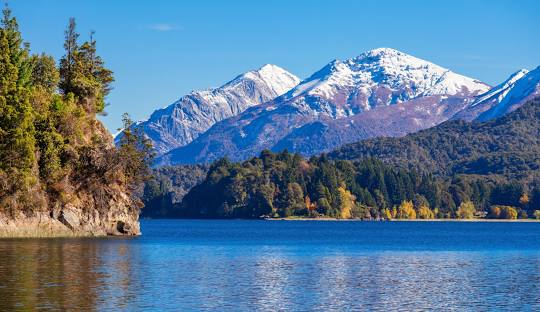
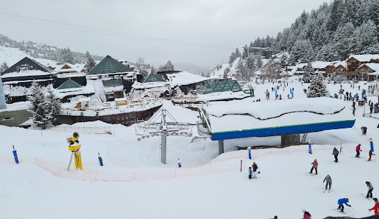
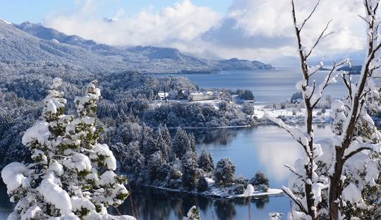
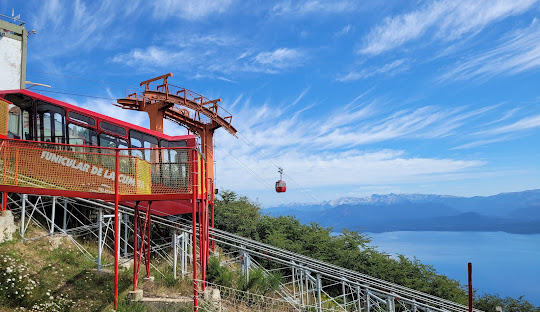
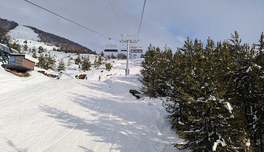

|  |  |  |  |  |
San Carlos de Bariloche (comumente chamada de Bariloche) é uma cidade na região da Patagônia argentina. Uma cidade localizada em meio a bosques milenares, montanhas cobertas de neve e lagos cristalinos na província do Rio Negro, na Argentina. É um cartão postal da nossa Patagônia. Uma cidade anfitriã por excelência e repleta das belezas naturais mais importantes do país.
Limitada pelo lago glacial Nahuel Huapi, junto à Cordilheira dos Andes, Bariloche é conhecida pela arquitetura no estilo alpino suíço e pelo chocolate, vendido em lojas na Calle Mitre, a rua principal. A cidade serve também como uma base para caminhadas e a prática do esqui nas montanhas próximas e para explorar a região dos lagos ao redor.